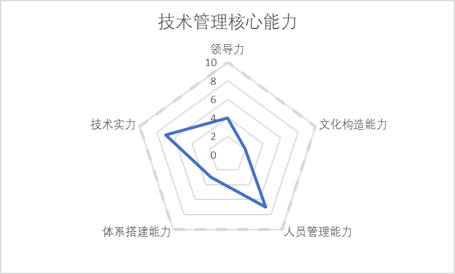

在投资圈里经常听到这样的话：“CEO和方案都有了，就差个CTO了”。技术人员听了都哈哈一笑，觉得不靠谱。
但是笑过后，反思这句话，其实无论巨头公司还是初创公司，每个公司都有这个情况，有些公司真的就因为找到了合适的CTO崛起，有的公司因为找错了CTO而走上歧途，也有的CTO因为找错了公司而耽误了自己的时间。
究竟什么是CTO，一个公司真的需要CTO么？哪些公司的职位对于技术管理者来讲真的是CTO的职位？同样是技术最高负责人，为什么有人叫CTO、有人叫技术总监、技术VP，有人叫首席架构师？他们之间的差别是什么？怎样才能成为一个合格的CTO？
这些问题，我将通过“CTO核心能力管理”系列文章分享一些自己的思考，也重新定义一下市场上对于上述职位的定义，各位CEO和HR在发布JD的时候重新思考一下，自己需要的是一个CTO还是技术VP、还是技术总监。
跟各位技术管理者也谈一下自己CTO成长之路的一些感悟，希望可以对大家有所启发，也希望大家多多提意见，让我自己也能更多的向大家学习。
首先说一个观点，“所有的职位不是别人给你的，而是你自己挣出来的”，一个人在某一个公司一个职位18个月以上，基本上是获得了这个公司合伙人和其他管理者的认可，存在必合理，现存的最高技术负责人：CTO、技术VP、技术总监、首席架构师都是合理的，一个公司最高技术负责人不一定是CTO。
各职位之间的差异，我从以下技术管理者需要的五个核心能力来区别开：领导力、文化构造能力、人员管理能力、体系搭建能力、技术实力。同样是最高技术负责人，在这五点能力上的强弱决定了最终自己在市场上“挣”出来的职位是什么。
这篇文章会把这5个技术管理的核心能力进行阐述，然后根据下面的技术核心管理能力模型来对这些职位进行重新定义。后续几篇文章会分享一下如何提高这五方面能力的一些心得和经验。
领导力的定义有很多，管理大师德鲁克的定义是“领导力能将一个人的愿景提升到更高的目标，将一个人的业绩提高到更高的标准，使一个人能超越自我界限获得更大成就；另一位领导力大师约翰·麦克斯威尔的定义是：领导者是知道方向、指明方向，并沿着这个方向前进的人。
而我的定义很简单：“成事”的能力，领导力最终是用各种各样的方法、人员、影响力、号召力、决策力将一个事情从0到1的能力，如果把事情做成0.99，都不是领导力的体现。是否对最终结果负责，这也是所有带”O”的职位和不带”O”的职位最大的差别。
文化是人类群体创造并共同享有的物质实体、价值观念、意义体系和行为方式，是人类群体的整个生活状态。对应到技术管理上，就是管理者对于大家意识的影响力，小到对于整个技术团队价值观，公司技术氛围、行为方式和状态的构造和影响能力，大到对于国内技术生态甚至国际技术生态的影响力。
文化对于公司和部门管理非常重要，它是无形之手，决定了你团队的价值观是什么，你的公司能不能招聘到高级的技术人员，在我们日常流程和管理者眼睛看不到的地方，员工是怎样工作的。
是否可以打造一个合适公司发展的技术文化，是否可以构造一个开放、透明的技术氛围，是否有能力建立一个MTP（Massive Transformation Purpose）能让每个技术人员深入人心，能在技术圈内影响到志同道合的牛人来一起共同奋斗。
“影响意识”的能力是一个CTO水平高低的评判标准，也是每个”O”级别管理者能力的体现。同样是CEO/CTO，除了可以“成事”的领导力，文化构造能力也是决定了哪些企业可以持续壮大，哪些企业会昙花一现的关键要素。
人员是一个科技企业和技术团队核心最重要的资产，如何让技术人才这样特别聪明的一群人可以高效的工作，对这些聪明人如何招、识、管、留、开，是一个技术管理者的核心技能。人员管理其中不仅仅是沟通的能力，更要是对人员素质的准确判断、员工心理、团队士气、杀伐决断、上下级管理沟通的综合能力。
从发挥人员能力的角度来看，一个好的技术人才可以做到1，一个优秀的总监可以做到10，一个卓越的O级别人物就要做到100。所以，人员管理的能力，简化来讲，就是管理者如何让人100的能力。这里的人员管理，不仅仅指的是管理下级，还有管理同级和管理上级的能力，能否和其他合伙人以及CEO/COO级别紧密沟通和配合，也是一个高级管理人员是否可以成功的关键。
体系搭建能力比较复杂，做成一个事情，不仅仅包括项目管理的能力，而且要包括从0开始建立选择项目管理方法、选择人员管理体系，然后再根据体系进行管理的能力。不同的公司，不同的阶段管理方法和体系都会发生一些变化，从项目管理、架构管理、到人员管理、体系管理，什么时间用什么样的管理方法，控制好质量、进度、节奏、人员是一个管理人员能力的体现。从具体管代码、项目，到最高层的建立一套体系取代管理人员日常的工作，体现这个管理人员的职位和公司对他的需要。
技术管理人员，技术是必不可少的，在这个维度上经常有些争论，例如“CTO要不要是极客”，“CTO应该不应该写代码”。我这么理解，把技术人员对比成运动员，一个人的技术能力就是他的肌肉的实力。有的人上肢力量很发达，可以举重；有的人腿部肌肉很发达，可以短跑，有的人肌肉匀称，善于马拉松。不同的技术人员、不同的职位，需要的肌肉群是不同的，对于不同公司的相同职位，其实需要的肌肉群也不同。没有一个人全身的肌肉都发达，也没有一个公司仅需要一种肌肉群的CTO，作为技术人员来讲，你的肌肉强度和肌肉群的分布，也会影响职位的不同。
下面根据这五个维度能力模型来重新定义现在的技术管理岗位，公司的管理者也可以根据实际需要来找到公司需要的人才：
技术总监能力模型 
对于技术总监来讲，要有比较强的技术基础实力和人员管理能力，主要是要能把事情完成和落地，对于小公司来讲，如果最高职位是技术总监，那么就需要技术肌肉矩阵全面的，对于大公司，技术总监意味着单项技术肌肉比较强。无论公司大小，总监级别一般都会汇报给某个业务线VP或者技术线VP/CTO，因为他不是对最终结果负责的人。同样，领导力和体系搭建能力就没有那么强，对于文化构造能力更要弱一些，因为这个层级并不需要这些能力。
技术VP能力模型
技术VP和总监最大的差异在于体系搭建能力的增强，每一个VP会有一个或者多个总监来支撑，建立一套体系让技术研发高效的运转起来，体系搭建的能力甚至要高于CTO，因为他是CTO的大内总管。而技术实力略强于总监，领导力，文化构造能力也有所提高。VP和CTO的最大差异是是否可以对技术的最终结果负责，不仅仅是技术本身、而是在财务、战略方向上是否具有决策力，这是副手和正手之间的差距。在很多时候拍板很难，因为CTO很多时候不管是不是由你直接造成的，你都要承担所有的后果。所以技术VP一般不会直接汇报给CEO，因为CEO眼里只有0和1，不会接受任何理由。同时，公司外部文化和内部文化的构造能力也是VP和CTO的差异之一。
首席架构师能力模型
首席架构师应该是在公司里技术最全面最强的一个人，技术肌肉和公司整个技术最匹配的人员。经常有人会把首席架构师能力模型和CTO能力模型搞混，首席架构师可以是Geek一样的人物，因为他不对商业的最终结果负责，但是对技术整体架构、前瞻性，技术本身体系负责。因此，首席架构经常会把方案汇报给技术VP/CTO供选择，不会最终拍板。首席架构师的技术非常厉害，领导力和文化构造能力就会相对较弱一些。
CTO能力模型
CTO是能力矩阵里最均衡的一个，突出的能力是领导力和文化构造能力，而不是技术实力。公司小的时候，CTO可能是公司中技术最强的那个人，但是CTO必须要有能力构建一个文化和体系，迅速能让比自己技术牛的人、体系搭建能力比自己强的人融入到公司，才可以让自己到更高层次上来做决策。CTO要把控和技术相关的布局节奏、商业结果、公司战略、人才策略，并翻译成其他合伙人可以听懂的语言，来做“成”事。
CTO的技术肌肉通常要全身匀称的，因为他是公司里的技术肌肉教练，他可以肌肉不强大，但是要知道找什么样的技术肌肉团队来满足公司的需要，在赛场上赢球。同样，如果CTO只对技术着迷而对于CEO的融资策略、战略决策、业务布局，COO/CFO的公司运营、财务运作没有有效建议并对结果负责的话，CTO也很难成为公司CEO、COO、CTO三个重要O级别人物之一。所以，最终的管理的道理是相通的，如果你选择了CTO作为你的职业路径的话，其实你已经放弃了你是公司技术最强的那个人的成长路径。
上面用技术管理核心模型来重新定义了这几个职位，一个初级技术管理人员可以根据自己的职业发展方向有意地培养自己的能力来达到自己的目标方向，一个公司在招聘技术人员的时候也可以对号入座，构建合适的JD找到自己合适的人才。这个“郭氏”技术管理核心模型也是第一个版本，也希望各位多给宝贵意见，促进模型本身逐步迭代，更贴近企业技术管理真实现状。后续几篇文章会分享一下如何提高这五方面能力的一些心得和经验，请大家持续关注《技术领导力300讲》。
作者简介
郭炜，易观 CTO ，中国软件行业协会智能应用服务分会副主任委员，TGO鲲鹏会北京分会会长。负责构建易观技术团队、完成易观大数据采集、平台、数据挖掘等技术架构与体系；从无到有完成易观混合云的搭建、以及易观 SDK 的升级，并发布易观秒算实时计算平台。目前易观大数据平台日处理数据量 30T ，272 亿条，月活用户5.5亿。